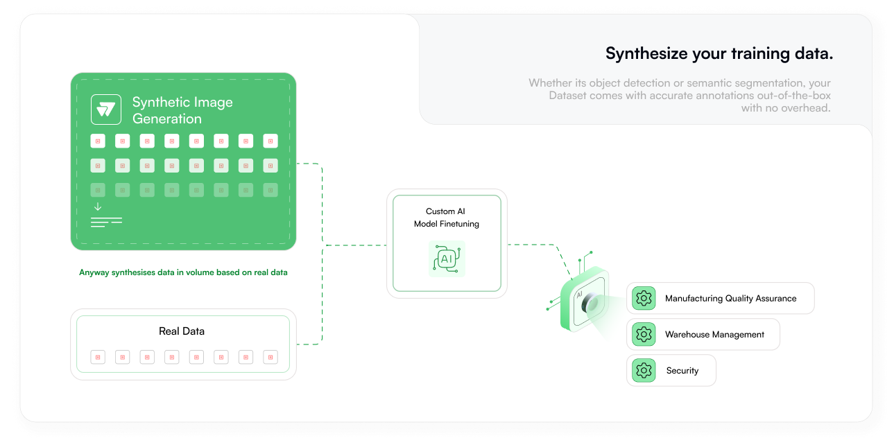
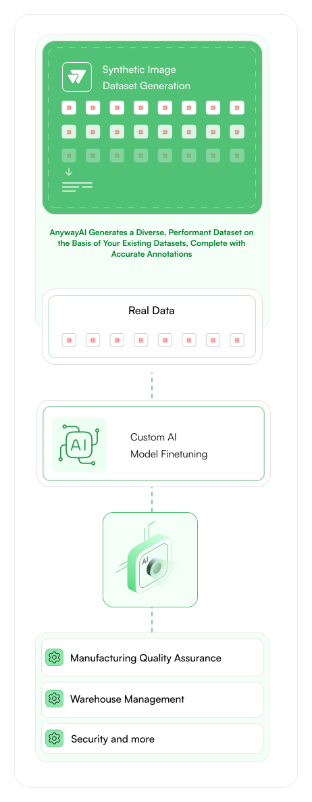
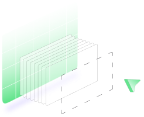

Seamlessly integrate the power of limitless data into your vision AI applications
 Why Anyway, anyway?
Anyway.ai helps solve crucial, real-world problems by generating and delivering high-quality, labelled synthetic datasets to fine-tune your existing models. The stuff that enterprises like yours spend a lot of time and resources doing manually.

Hyper Specific Datasets
Every synthetic image generated by Anyway.ai is tailored to represent any scenario your models might face in production, down to the exact environment.

100% Autonomous Annotation
Whether its object detection or semantic segmentation, your Dataset comes with accurate annotations out-of-the-box with no overhead.
20x Faster
Forget spending time on curating and annotating datasets for every project. Just request a Fine-Tuning Dataset and begin training.